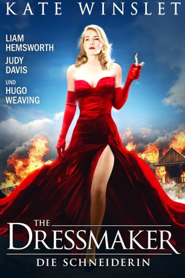

gesehen am 07.04.2016
gesehen am 07.04.2016Alternativ: The Dressmaker gesehen am 07.04.2016
 
 IMDB-Wertung: 7.1 / 10
IMDB-Wertung: 7.1 / 10  Metascore:
Metascore: 
Der lange Schatten der Vergangenheit hält Myrtle „Tilly“ Dunnage (Kate Winslet) nicht davon ab, in ihre verschlafene Heimatstadt zurückzukehren. Als junges Mädchen wurde die mittlerweile exzellente Schneiderin von dort vertrieben. Nach einer einzigartigen Karriere in europäischen Modemetropolen wie London und Paris lässt sie sich also erneut im australischen Städtchen Dungatar nieder, beendet den Zwist mit ihrer Mutter „Mad“ Molly (Judy Davis) und stellt sich der schwierigen gesellschaftlichen Situation. Die Schönheit führt nichts Gutes im Schilde und ist alles andere als unvorbereitet: Im Gepäck hat sie ihre Nähmaschine, die der talentierten Frau bei ihrem süßen Rachefeldzug helfen soll. Schnell sind die Bewohner von ihren Modekreationen begeistert und sie findet Gefallen an dem attraktiven Teddy (Liam Hemsworth).
Jahr: 2015
Dauer: 118 Minuten
FSK: 12
Land: Australien Studio: Ascot Elite Entertainment GroupTonspuren: DD5.1 - ,
Untertitel: Deutsch,
Auflösung: 1080p (1920x808) Größe: 9287 MB
Genre: Drama
Regisseur: Jocelyn Moorhouse
Drehbuch: P.J. Hogan, Jocelyn Moorhouse, Rosalie Ham
Soundtrack: David Hirschfelder
Darsteller:
 Kate Winslet als Myrtle 'Tilly' Dunnage
Kate Winslet als Myrtle 'Tilly' Dunnage Liam Hemsworth als Teddy McSwiney
Liam Hemsworth als Teddy McSwiney Hugo Weaving als Sergeant Farrat
Hugo Weaving als Sergeant Farrat Sarah Snook als Gertrude 'Trudy' Pratt
Sarah Snook als Gertrude 'Trudy' Pratt Judy Davis als Molly Dunnage
Judy Davis als Molly Dunnage Caroline Goodall als Elsbeth
Caroline Goodall als Elsbeth Kerry Fox als Beulah Harridiene
Kerry Fox als Beulah Harridiene Shane Jacobson als Alvin Pratt
Shane Jacobson als Alvin Pratt Barry Otto als Percival Almanac
Barry Otto als Percival AlmanacDatei: X:\2015(A-F)\Dressmaker - Die Schneiderin, The (2015, FSK, 1920x808).mkv seit 27.03.2016
Festplatte: HD 2015(A-Z)
 Es gibt insgesamt 143 Filme in der Gruppe '2015(A-F)'
Es gibt insgesamt 143 Filme in der Gruppe '2015(A-F)'